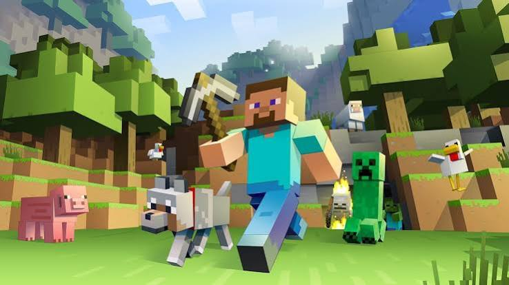

O que sabe sobre Minecraft?

Um pouco sobre o jogo
O minecraft é um jogo sandbox de sobrevivência e de construção criado por Markus Person(Notch) em meados dos anos 2000 e foi publicado a versão completa em 2011. O minecraft foi comprada pela Mojang Studios e depois o estúdio foi comprada pela a microsoft.
Apesar de existir uma versão completa, o jogo ainda vem se
Atualizando. O minecraft é o segundo jogo mais vendido da história, perdendo
apenas para o tretis e ele está dispon[ivel para ser jogado na grande maioria das
plantaformas: PC, console e
celular.